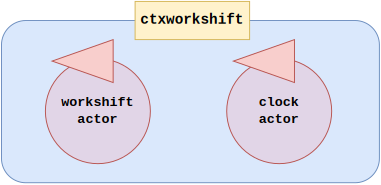

Introduction
Requirements
Requirement analysis
The consumer requires to design a simple system (using the
QA-System given by the same consumer) that manages a machine in order to make it able to handle two different types of message in two dedicated time periods. The system must reproduce three different period (morning, afternoon and night) and the requirements say that:
- m1 messages must be handled only in the morning;
- m2 messages must be handled only in the afternoon;
- the machine must be inactive during the night (it sleeps);
Then, the system must reproduce the
flow of the days of the reality but
nothing is specified about the duration of the periods by the consumer.
Finally, the consumer specify that
m1 and
m2 messages can be sent by external entities at every time:
- the QA-System implicitly let to receive message over the network, then the requirement of the external entities is already satisfied by using a context appropriately set (see QAK21Intro);
- messages can be sent at every time so it means that a certain type of message can be received even if the machine isn't in the period dedicated to handle it; also this requirement is directly satisfied by the QA-System that provided a mechanism to enqueue messages.
According to the tools provided by the QA-System, in order to meet the requirements and realize the new system, we need to introduce two actors:
- workshiftactor that is the machine handling the two type of messages in their dedicated period;
- clockactor that represents a sort of clock that regulates the flow of the periods by emitting events.
|

|